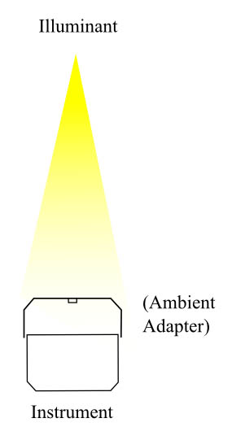
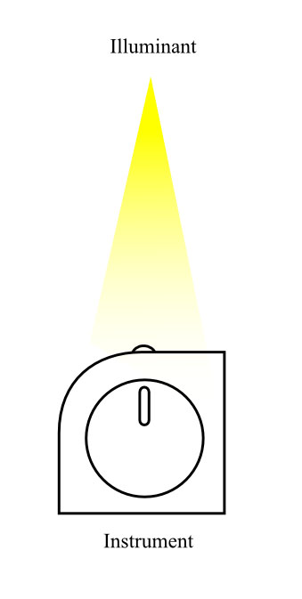
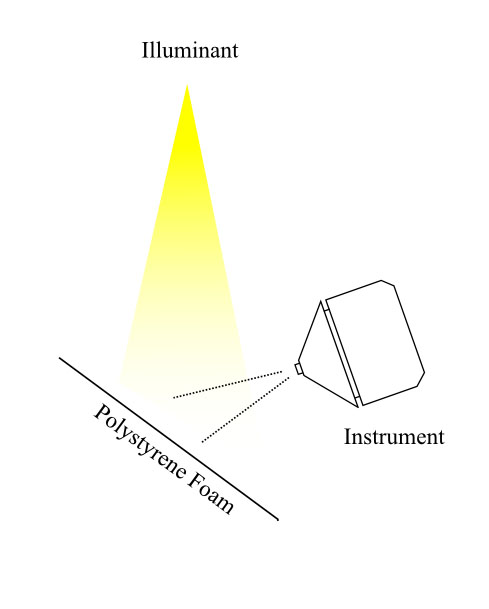
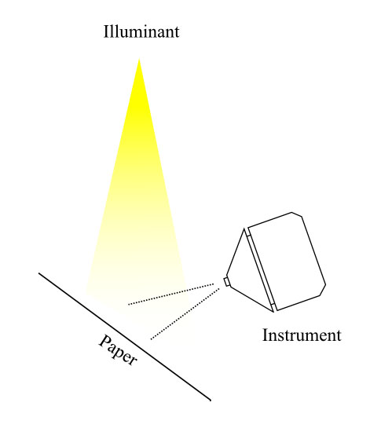
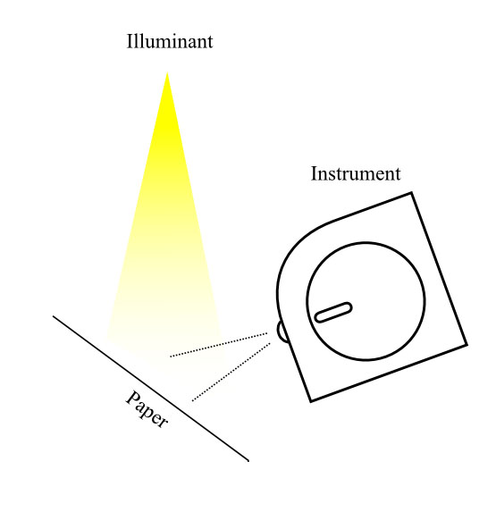
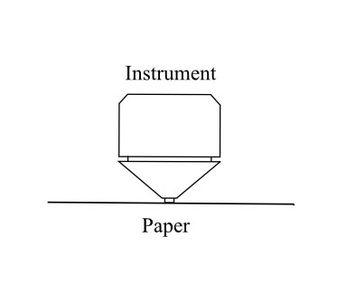

spectro/illumread
Summary
Use an instrument or instruments to measure an illuminant spectrum,
including estimate its Ultra Violet content. A combination of direct
illumination readings and readings from a piece of paper having some
FWA content are used for this. (If the UV content is not needed, or
a suitable instrument is not available, then spotread should be used instead.)
Usage Summary
illumread [-options]
illuminant.sp
-v
Verbose mode
-S
Plot the readings in a graph window.
-c comport
Set
COM port, 1..4 (default 1)
-N
Disable
initial calibration of instrument if possible
-H
Use high resolution spectrum mode
(if available)
-Y r
Set refresh measurement mode
-W n|h|x
Override
serial port flow control: n = none, h = HW, x = Xon/Xoff
-T
Test mode - restore & save measurements to
*_i.sp, *_r.sp, *_p.sp, *_mpir.sp, *_cpir.sp files
-D [level]
Print debug diagnostics to stderr
illuminant.sp
File
to save measurement to
Usage Details and Discussion
illumread uses a suitable instrument to read an illuminant
spectrum, and uses an indirect method to estimate the Ultra Violet
content of the illuminant, so as to provide better accuracy with FWA compensation. An instrument or combination
of instruments capable of spectral measurement of both emissive
measurement and reflective measurement without a U.V. filter is
required for this.
The -v flag causes extra information to be
printed out during chartread operation.
The -S flag enables the plotting of the
spectral reflectance/transmittance values. You must select the plot
window and strike a key in it to continue with another measurement.
The instrument is assumed to communicate through a
USB or serial communication port, and the initial port can be
selected with the -c option, if the instrument is not
connected to the first port. If you invoke illumread so as to display the
usage information (i.e. "illumread -?" or "illumread --"), then the
discovered USB and serial ports will be listed. On UNIX/Linux, a
list of all possible serial ports are shown, but not all of them may
actually be present on your system.
-N Any
instrument that requires regular calibration will ask for
calibration on initial start-up. Sometimes this can be awkward if
the instrument is being mounted in some sort of measuring jig, or
annoying if several sets of readings are being taken in quick
succession. The -N
suppresses this initial calibration if a valid and not timed out
previous calibration is recorded in the instrument or on the host
computer. It is advisable to only use this option on the second and
subsequent measurements in a single session.
The -H
option turns on high resolution spectral mode, if the instrument
supports it. See Operation of particular
instruments for more details.
The -Y r
option turns on refresh mode measurement, if the instrument supports
it. This may improve the repeatability of measurements of
illuminants that have a repetitive flicker.
The -W n|h|x
parameter overrides the default serial communications flow control
setting. The value n turns
all flow control off, h
sets hardware handshaking, and x
sets Xon/Xoff handshaking. This commend may be useful in workaround
serial communications issues with some systems and cables.
The -T flag invokes the test mode. In test
mode the three measurements are saved to files illuminant_i.sp
(Illuminant spectrum), illuminant_r.sp (Illuminant
off paper spectrum), and illuminant_p.sp (Instrument
measured paper reflectance spectrum), and these will be loaded if
discovered, allowing a replay of the calculation without requiring
any measurement. In addition, two diagnostic files illuminant_mpir.sp
(Measured paper under illuminant spectrum) and illuminant_cpir.sp
(Computed paper under illuminant spectrum) will be saved.
The -D flag causes communications and other
instrument diagnostics to be printed to stdout. A level can be set
between 1 .. 9, that may give progressively more verbose
information, depending on the instrument. This can be useful in
tracking down why an instrument can't connect.
The illuminant.sp is the name of the file to save the
resulting illuminant spectrum to. The format used is .sp.
Unlike the other measurement utilities, illumread doesn't connect to the instrument until it
is about to make a measurement. This allows for the possibility of
using a different instrument for each measurement.
It will display a menu:
Press 1 .. 6
1) Measure direct illuminant
2) Measure illuminant reflected from paper
3) Measure paper
4) Select another instrument, Currently 1 'usb:/bus4/dev2/
(GretagMacbeth i1 Pro)'
5) Compute illuminant spectrum, average result with 0 previous
readings & save it
6) Compute illuminant spectrum from this reading & save result
7) Exit
There are three measurements to be made, after which the illuminant
can be computed and saved. Before each measurement, the instrument
may need calibrating.
The first measurement needs a spectral instrument capable of reading
in an ambient or emissive mode. For instance, a Spectrolino, Eye-One
Pro or ColorMunki would be suitable instruments.
The second measurement needs a spectral instrument capable of
reading in an projector or emissive mode. For instance, a
Spectrolino, Eye-One Pro or ColorMunki would be suitable
instruments.
The third measurement needs a spectral instrument capable of reading
in reflective mode with UV included. For instance, a Spectrolino,
Eye-One Pro, DTP20, DTP22 or DTP41 would be suitable
instruments, as long as they are not fitted with UV filters.
To be able to estimate the level of Ultra Violet (UV) light in the
illuminant, a reasonable sized piece of white paper needs to be
used. The paper should have some noticeable level of FWA
(Fluorescent Whitener Additive, or Optical Brightening Agents) in
it, so that it responds to UV light. A piece of cheap copier paper
is ideal, since cheap paper is typically whitened with large amounts
of FWA. If the paper is thin (less than 160 gsm) then two or three
sheets should be used to prevent any background showing through. If
the intention is to use the illuminant spectrum for proofing to a
particular paper, then it's best to use the intended paper for this
purpose.
The first measurement 1),
is to use either the ambient or emissive measurement mode to measure
the illumination directly.
If the instrument supports an
ambient measurement capability, then it will be used. If the
insrument does not have an ambient mode, then an emissive
measurement mode can be used, although typically many illuminants
are too bright to directly point the instrument at. A work-around
is to reflect the illuminant from a spectrally flat white surface.
A good candidate for this is a piece of white, fine textured
polystyrene foam, or piece of white
Tyvec. [The
suitability of a reflector can be checked using
spotread -S to check that the
reflection characteristic is close to flat.]
  
The second measurement 2),
is to measure the illuminant after it has reflected from the paper.
This is done by placing the paper
such that it is uniformly illuminated with reasonable brightness,
and then placing the instrument so that it receives the reflected
light from the paper. This is typically achieved by placing the
instrument close to the paper at about 45º, so that it's aperture
has a clear view of the illuminated paper, but avoiding shadowing
the region that is in view, and also avoiding measuring specular
reflection if the paper is glossy.

The third measurement 3),
is to measure the paper directly using the instrument reflective
mode measurement.

If a different instrument is needed, use 4) to select from the available instruments attached
to your computer.
Once these three measurements have been made, then the illuminant
readings spectrum can be computed and save using 6), or a series of readings can
be made with each reading being averages with the previous readings
before saving it by using 5).
Note that the averaged readings will be weighted by their absolute
intensities, and that while the direct and indirect illumination
needs measuring for each reading, the same paper measurement can be
used each time.
If plotting is enabled, a plot of the measured (black) and with
estimated UV (red) is plotted. This is followed by a plot showing
measured paper reflectance (black) and the FWA calculated paper
reflectance (red).
Illumread can then be terminated using 7).
References:
If For a full description of the approach that illumread uses,
see:
"Estimating illuminant U.V. without a U.V. capable
instrument",
Graeme W. Gill, IS&T 19th Color and Imaging Conference
Final Program and Proceedings, pp. 58-60(3)